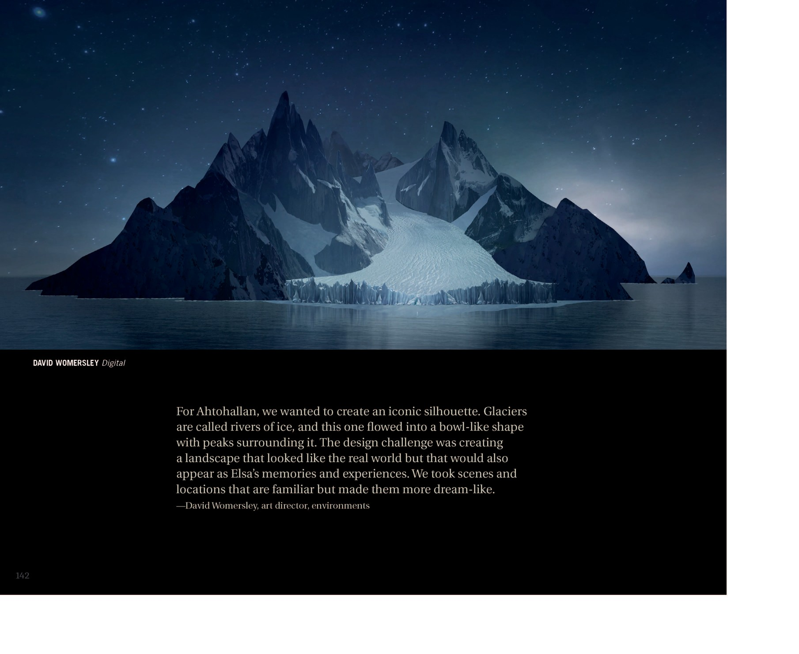

阿塔霍兰 Ahtohallan

阿塔霍兰记忆冰川（来源：《The Art of Frozen II》[p.145]）
📄 本质与传说
阿塔霍兰是《Frozen II》中的古老魔法之河，被描述为「full of memory（满载记忆）」，知晓过去的一切答案 （来源：Disney Wiki）。它在北境文化中是重要传说，北境人在摇篮曲《All Is Found》中吟唱它；伊杜娜称其为一种「精灵」，是「所有之母的精灵（mother of all the other spirits）」 （来源：Disney Wiki；《Dangerous Secrets》[ch.7][ch.31]；《All Is Found》）。它并非单纯的神话——现实中它是一座冰川（glacier，即「冰之河」），由冰雪构成，墙体与通道随艾莎移动切换；「记忆」实体存在于冰川内部（非表面投影），随艾莎凝视实时成形 （来源：《The Art of Frozen II》[p.145]；《Dangerous Secrets》[ch.31–32]）。

阿塔霍兰冰川夜景概念图：「冰之河」自群峰间泻入海湾，构成标志性轮廓（来源：《The Art of Frozen II》[p.142]）
其名或为芬兰语/萨米语合成：Ahto（芬兰水神）＋ halla（地面上的霜） （来源：Disney Wiki）。片中《Show Yourself》一段揭示：艾莎进入冰川洞窟，被四元素符号环绕，最终看见母亲伊杜娜吟唱摇篮曲的记忆，并获赠第五灵白裙——此时她的衣裙由阿塔霍兰的魔法改变（不同于《Let It Go》中由自身魔法改变） （来源：Frozen Wiki / Show Yourself 词条）。

《Show Yourself》段落：艾莎身着紫色睡裙立于漂浮的冰晶之间，即将被阿塔霍兰的魔法改变衣裙（来源：迪士尼官方小说彩色插图）
""Where the north wind meets the sea, there's a river full of memory… Come, my darling, homeward bound, where all is found." — 来源：《All Is Found》题名曲（Iduna 摇篮曲 / Frozen II）
📄 位置与黑沙滩
阿塔霍兰位于暗海（Dark Sea）尽头，需穿越巨浪抵达 （来源：Disney Wiki）。黑海滩的灵感取自冰岛 Reynisfjara 黑沙滩 （来源：《The Art of Frozen II》[p.125][p.145]；剧组北欧采风）。父母正是以「赴远方公主婚礼」为掩护驶向 Ahtohallan / Dark Sea 而遇难 （来源：《Dangerous Secrets》[Prologue][Epilogue]）。

「Dark Sea」概念图：艾莎伫立黑沙滩远眺暗海，场景灵感取自冰岛 Reynisfjara 黑沙滩（来源：《The Art of Frozen II》[p.125]）
📄 记忆规则
阿塔霍兰以「记忆实体」联结艾莎与历史。深海冰因红>绿>蓝吸收速率呈浓郁海蓝（有色彩物理学依据） （来源：《The Art of Frozen II》[p.146][p.150]）。其风险如《All Is Found》所警告：潜得太深者会「drown（淹没）」——现实中即化为冰。艾莎在探入最深处后开始冻结，临终前将真相传给安娜 （来源：Disney Wiki；Frozen II (2019)）。其「记忆重现」能力在衍生《Polar Nights》中被延伸：艾莎可提取 Ahtohallan 记忆、实体化为冰影给安娜看 （来源：《Polar Nights》[ch.1][ch.7]）。
| 维度 | 电影1 艾莎魔法 | 电影2 阿塔霍兰记忆规则 |
|---|---|---|
| 魔法/记忆载体 | 冰雪由情绪驱动，可塑形、赋活雪人 | 记忆物理存在于冰川内部、随凝视实时成形（非投影） |
| 风险 | 恐惧使魔法失控伤人 | 「走得太远」会被冻结（艾莎结局暗示化为冰） |
| 核心隐喻 | 「水有记忆」——水承载历史 | Ahtohallan 是记忆实体，联结 Elsa 与历史 |
（来源：《The Art of Frozen II》[p.122][p.134][p.145]；《Frozen 1 青少小说》）